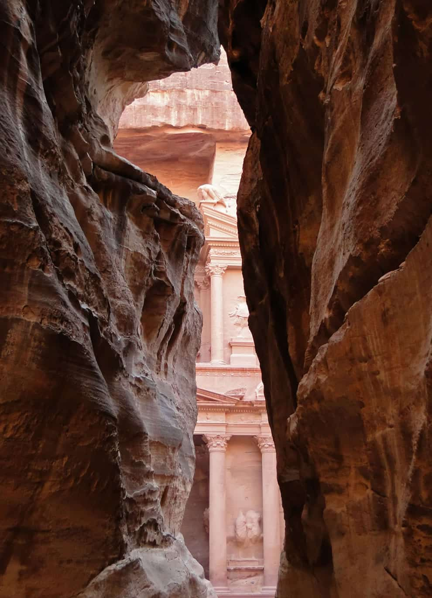
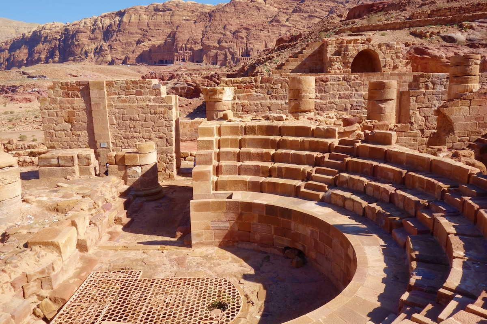

History of Petra
Petra's history is as unique as its appearance. Originally settled by the Nabataeans...
| Attribute | Details |
|---|---|
| Location | Southern Jordan |
| Founded | 4th century BC |
| Rediscovered | 19th century (by Swiss explorer Johann Ludwig Burckhardt) |
| Architecture | City carved in rock; fusion of Nabataean and Greco-Roman styles |
| Global Status | One of the New Seven Wonders of the World |
| UNESCO World Heritage | Designated in 1985 |
| Population | Over 30,000 at its peak |
| Significant Structures | Al-Khazneh (The Treasury), Al-Deir (The Monastery), The Roman Theatre |
| Trade Routes | Strategic location for trade between Arabia, Egypt, and the Mediterranean |
| Decline | Abandoned after earthquakes and changing trade routes |
| Modern Significance | Tourist attraction, archaeological site, and cultural symbol of Jordan |
| Water Systems | Advanced water collection and storage system with channels, dams, and reservoirs |
| Religious Significance | Center of worship for Nabataean gods like Dushara and Al-Uzza |

